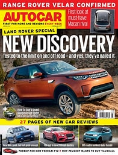
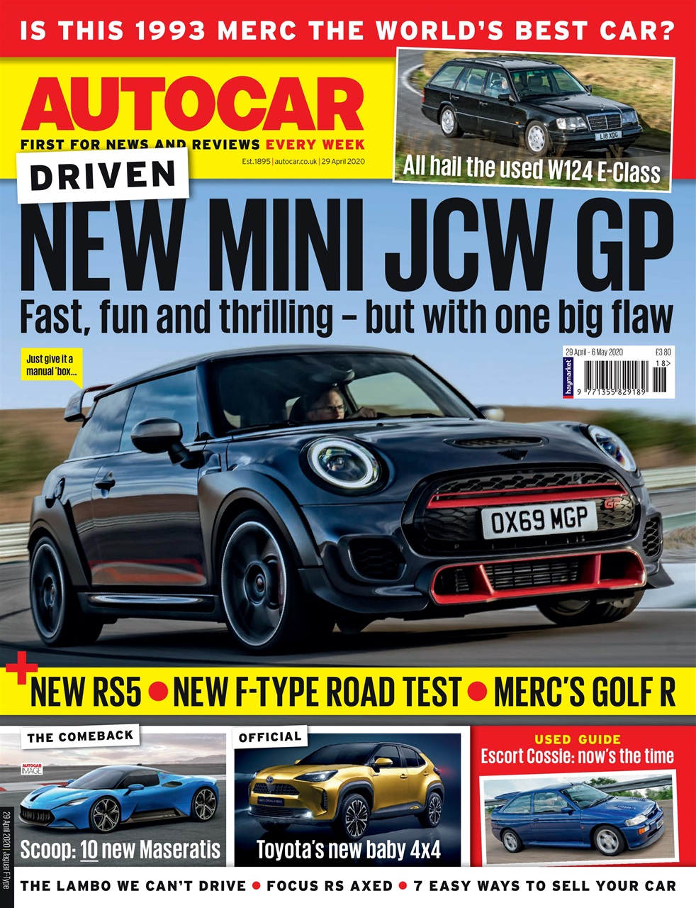
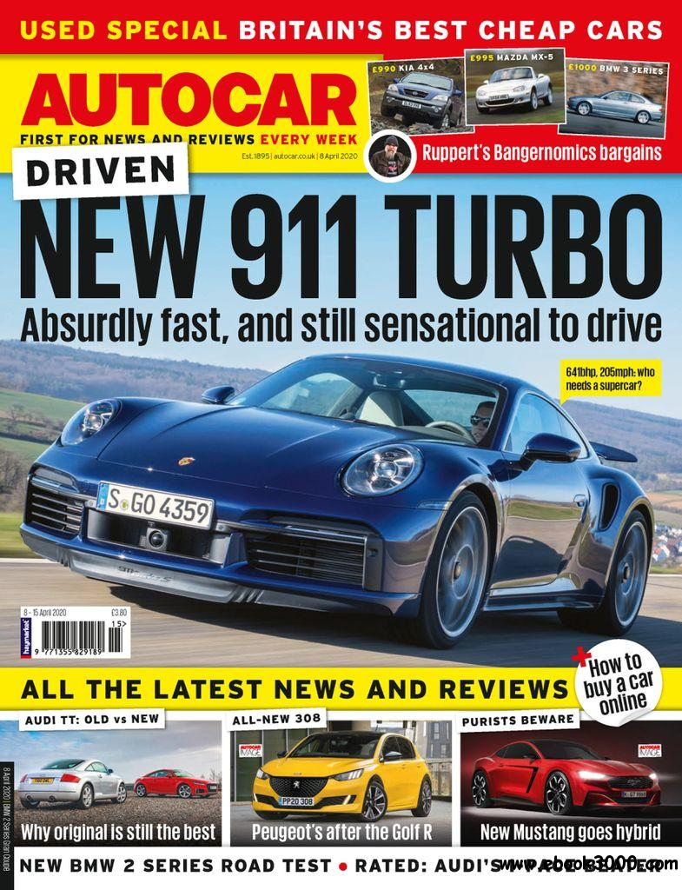

ABOUT US
Autocar India is a licensed publication of 'Autocar' , a British automobile publication by Haymarket Motoring Publications Ltd. It is part of Haymarket SAC Publishing (India) Pvt. Ltd., a joint venture between Haymarket and Sorabjee Automotive Communications. Autocar India is published as a monthly magazine and currently enjoys the highest readership among automobile magazines in India (IRS-2009 R1 report).A television show titled 'The Autocar Show' also airs weekly on Times Now and ET Now which enjoys the highest viewership among Indian automobile programmes (source). Autocar India has a strong digital presence with the website providing a daily feed of automobile news, updates and reviews.
The Autocar India YouTube channel features numerous videos with reviews, comparisons and other exciting automotive content. Autocar India's digital presence extends to Twitter, Facebook, Instagram and Google+. Led by Hormazd Sorabjee, India's leading automobile journalist, the first Autocar India issue came out in September 1999.
Over the years, the brand has earned an enviable reputation for high level of editorial content, production standards and meticulous testing. The parent brand, 'Autocar', was first published in 1895 and is referred to as the world's oldest car magazine. Autocar also lays claim to inventing the road test in 1928.
  